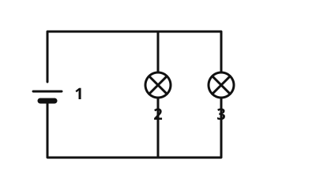

Parallelschaltung
Mit einem KI-Tutor lernen
Ein KI-Tutor erklärt dir diese Seite und hilft dir bei den Übungen. Wähl deinen Assistenten:
Mit Claude öffnen Mit ChatGPT öffnen Mit Le Chat öffnen
Du nutzt dein eigenes Konto beim Anbieter. Der Assistent ist kein Angebot von lernapps.net: lernapps liefert nur Inhalte und Übungen. Die Wahl gilt für alle Seiten, nur auf diesem Gerät.
Die Idee
In deinem Zimmer kannst du das Licht ausschalten, ohne dass der Kühlschrank in der Küche ausgeht. Das geht, weil die Geräte im Haus parallel geschaltet sind: Jedes hat seinen eigenen Weg zur Stromquelle.
Das merkst du dir
- Parallelschaltung
Bei einer Parallelschaltung sind die Bauteile nebeneinander geschaltet. Der Strom hat mehrere Wege, einen für jedes Bauteil.

Der Strom teilt sich auf. Jede Lampe liegt auf ihrem eigenen Weg. Beschriftung: 1 Batterie, 2 Lampe 1, 3 Lampe 2.
Quelle: https://github.com/lernapps/elektrizitaet. Lizenz: CC0-1.0.Daraus folgt:
- Wird eine Lampe herausgeschraubt, leuchten die anderen weiter.
- Mit einem Schalter in jedem Zweig schaltest du jede Lampe einzeln.
- Ein Schalter in der gemeinsamen Leitung schaltet alle zusammen.
- Jede Lampe leuchtet gleich hell, auch wenn du eine dazuschaltest.
Vorsicht, Kurzschluss
- Kurzschluss
Bei einem Kurzschluss fließt der Strom über einen Weg ganz ohne Verbraucher. Das Kabel kann sehr heiß werden, deshalb ist ein Kurzschluss gefährlich.
Verbindest du die beiden Pole der Batterie direkt mit einem Kabel, gibt es einen Kurzschluss.
Beispiel
Das Licht im Haus
Alle Lampen und Steckdosen im Haus sind parallel geschaltet. Fällt eine Lampe aus, leuchten die anderen weiter, und jede Lampe hat ihren eigenen Schalter.
Übung
Übung
Lösung
Sie leuchtet weiter. richtige Antwort
Jede Lampe hat ihren eigenen Weg, und der Kreis der anderen Lampe bleibt geschlossen.
Sie geht auch aus.
Das passiert in der Reihenschaltung, wo es nur einen Weg gibt.
Sie leuchtet doppelt so hell.
Die Helligkeit bleibt gleich. Jede Lampe bekommt weiter denselben Strom.
In der Parallelschaltung hat jede Lampe einen eigenen Weg. Fällt eine aus, bleibt der Weg der anderen geschlossen.
Mehr dazu:
Übung
Lösung
Richtige Antwort: Eine Lampe wird herausgedreht, alle gehen aus – Reihenschaltung; Eine Lampe wird herausgedreht, die anderen leuchten weiter – Parallelschaltung
Gehen alle Lampen aus, gibt es nur einen Weg, also eine Reihenschaltung. Leuchten die anderen weiter, hat jede Lampe einen eigenen Weg, also eine Parallelschaltung.
Mehr dazu:
Übung
Lösung
Richtige Antwort: Die Aussage stimmt.
Weil die Lampen und Geräte parallel liegen, funktionieren sie unabhängig voneinander. Du kannst jede einzeln ausschalten.
Mehr dazu:
Aufgabe Nr. 1
Aufgabe Nr. 1
Baue einen Stromkreis mit zwei Lampen in den beiden Zweigen. Jede Lampe soll einen eigenen Schalter haben, mit dem du nur sie ein- und ausschaltest.
Das Schaltbrett hat sechs Plätze: 1 und 6 in der Hauptleitung, 2 und 3 im ersten Zweig, 4 und 5 im zweiten. Du wählst Lampe, Schalter oder Kabel, tippst auf einen Platz und schaltest dann den Strom ein.
Lösung
In jeden Zweig ein Schalter und eine Lampe, zum Beispiel Schalter auf Platz 2 und 4, Lampen auf Platz 3 und 5.
Übung
Lösung
Es gibt einen Kurzschluss, und die Lampen leuchten nicht. richtige Antwort
Der leere Zweig ist ein Weg für den Strom ganz ohne Lampe. Der Strom nimmt diesen Weg und lässt die Lampen aus.
Die Lampen leuchten heller.
Die Lampen bekommen dann sogar keinen Strom mehr, weil der Strom den leeren Zweig nimmt.
Es passiert nichts.
Ein leerer Zweig verändert den Stromkreis deutlich. Es ist ein Kurzschluss.
Ein Zweig ohne Verbraucher ist ein Kurzschluss. Der Strom fließt am ganzen Verbraucher vorbei, und das kann Kabel gefährlich heiß machen.
Mehr dazu: